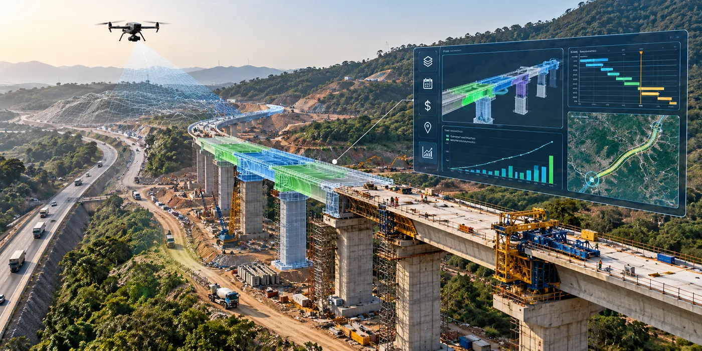

The Assignment
The Missing Link Project required an integrated digital approach to program management for a major transportation infrastructure development.
The assignment involved establishing a Program Management Office and implementing a Digital Project Management Platform capable of bringing project information, design, scheduling, cost, geospatial data and analytics into a common environment.
The project had an overall value of £52.01 million, with CS TECH Ai’s services valued at £10.42 million.
Our Approach
CS TECH Ai established the Program Management Office and deployed dedicated resources for program management, supported by an integrated digital project delivery environment.
The engagement included:
- Establishment of the Program Management Office and deployment of program management resources
- Implementation and support of a Digital Project Management Platform
- Integration of BIM, Common Data Environment (CDE), 5D BIM, ERP and GIS systems
- Implementation of business analytics for project monitoring and decision-making
- Supply of licences for BIM, CDE, 5D BIM, ERP, GIS and business analytics systems
- Drone survey of the entire project corridor
- Development of digital data-based Monthly Progress Reports
- Business Process Re-engineering documentation
- Development of scheduling, 3D modelling, EIR and BEP guidelines
- Integration of 4D and 5D information for schedule and cost management
- Creation of asset information for use across the project lifecycle and subsequent O&M
The integrated environment brought project stakeholders onto a common platform while connecting design, construction, schedule, cost and spatial information for coordinated program management.